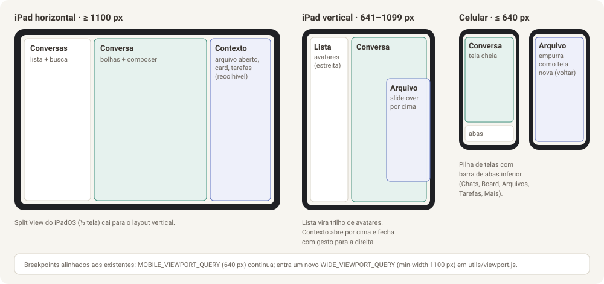

Parte 3 de 8
Parte 3 — Layout mais amigável (touch primeiro, sem perder o PC)
Objetivo: fazer o TaskNexus parecer um app de mensagens bem feito no iPad e no celular, e continuar produtivo no PC com teclado. Esta parte é o "layout v3", mas não é uma reescrita: é uma evolução do v2, reusando os tokens
--v2-*, as fontes self-hosted e os hooks de viewport que já existem.
3.1 Diagnóstico de UX do layout atual
| # | Problema observado | Impacto no tablet | Correção proposta |
|---|---|---|---|
| P1 | O chat é um terminal que ocupa toda a coluna | Todo o resto (ler, copiar, clicar) herda os problemas do terminal | Chat estruturado (Parte 2) |
| P2 | Navegação por 4 abas internas em useState, sem URL |
Não dá para abrir "o arquivo X" ou "a conversa Y" por link, nem voltar com o gesto do iPad | Rotas reais para telas, conversas e arquivos (3.4) |
| P3 | A lista de conversas mostra nome e status, sem prévia | Não dá para saber o que aconteceu sem abrir cada uma | Lista estilo WhatsApp com prévia, hora e contadores (3.5) |
| P4 | Atalhos de teclado num FAB flutuante arrastável | Cobre conteúdo e exige aprender posições | No chat, some (não precisa). No modo Terminal, continua |
| P5 | Três larguras tratadas com dois breakpoints (640/820 px) | iPad deitado (1180–1366 px) desperdiça espaço; não há painel lateral de contexto | Três layouts: celular, iPad em pé, iPad deitado/PC (3.3) |
| P6 | Estilos inline em objetos JS espalhados pelos componentes | Difícil manter consistência de espaçamento e alvo de toque | Camada de componentes base + tokens de espaçamento e tipo (3.2, 3.6) |
| P7 | Não há busca global | Achar uma conversa, card ou arquivo exige navegar | Paleta de comandos ⌘K + busca na lista (3.7) |
| P8 | Alvos de toque pequenos em alguns controles (ex.: botão "+ Tarefa" com 24 px) | Toque errado, frustração | Mínimo de 44 × 44 px em qualquer controle tocável |
3.2 Sistema visual (Design)
3.2.1 O que se mantém
- Paleta
--v2-*(frontend/src/layouts/v2/theme.css), clara e escura: neutros quentes, acento verde-azulado (--v2-accent, matiz 168) e acento secundário índigo (--v2-accent-2, matiz 268). Ela já é boa e tem identidade; não troque. - Fontes: Figtree (interface e leitura) e IBM Plex Mono (código), já servidas localmente.
- Troca de tema via
data-themee troca de layout viadata-layout.
3.2.2 O que entra (tokens novos, no mesmo arquivo theme.css)
:root {
/* Espaçamento em grade de 4 px */
--v2-space-1: 4px; --v2-space-2: 8px; --v2-space-3: 12px;
--v2-space-4: 16px; --v2-space-5: 20px; --v2-space-6: 24px; --v2-space-8: 32px;
/* Tipografia (escala 1,125) */
--v2-text-xs: 12px; --v2-text-sm: 13px; --v2-text-md: 15px;
--v2-text-lg: 17px; --v2-text-xl: 20px; --v2-text-2xl: 24px;
--v2-leading-tight: 1.3; --v2-leading-body: 1.55;
/* Raios por função, não um raio para tudo */
--v2-radius-control: 10px; /* botões, inputs */
--v2-radius-card: 14px; /* cartões, respostas */
--v2-radius-bubble: 16px; /* bolhas de mensagem */
--v2-radius-sheet: 20px; /* bottom sheets */
/* Toque */
--v2-hit: 44px; /* alvo mínimo */
--v2-row: 56px; /* linha de lista confortável */
/* Movimento */
--v2-ease: cubic-bezier(.2, .8, .2, 1);
--v2-dur-fast: 120ms; --v2-dur: 200ms;
/* Superfícies novas do chat */
--v2-bubble-me: var(--v2-accent-soft);
--v2-code-bg: oklch(0.24 0.012 262); /* escuro nos dois temas */
--v2-code-fg: oklch(0.92 0.01 262);
--v2-link: var(--v2-accent-2);
}
@media (prefers-reduced-motion: reduce) { :root { --v2-dur-fast: 0ms; --v2-dur: 0ms; } }
(O theme.css tem uma "lápide" para --v2-bubble-me, removido quando as
bolhas mockadas saíram. Com bolhas reais ele volta, derivado do acento.)
3.2.3 Tipografia por contexto
| Contexto | Tamanho | Peso | Altura de linha |
|---|---|---|---|
| Título de tela | --v2-text-xl |
700 | tight |
| Nome da conversa na lista | --v2-text-md |
600 | tight |
| Prévia na lista, metadados | --v2-text-sm |
400 | tight, --v2-text-dim |
| Mensagem de chat | --v2-text-md (16 px no iPad) |
400 | body |
| Leitura de markdown no viewer | 16 px, coluna ≤ 76 caracteres | 400 | 1,6 |
| Código | 13,5 px Plex Mono | 400 | 1,5 |
| Rótulos em caixa alta | --v2-text-xs, letter-spacing: .06em |
600 | — |
Números que se alinham (custos, contadores, horas) usam
font-variant-numeric: tabular-nums.
3.3 Layout por tamanho de tela

| Largura | Estrutura | Detalhes |
|---|---|---|
≤ 640 px (celular, já é MOBILE_VIEWPORT_QUERY) |
Pilha de telas + barra de abas inferior (Chats · Board · Arquivos · Tarefas · Mais) | A conversa ocupa a tela toda e esconde a barra de abas; arquivo aberto do chat empurra uma tela nova; gesto de voltar do sistema funciona porque cada tela é uma URL |
| 641–1099 px (iPad em pé, Split View) | Trilho de 72 px com avatares das conversas + conversa | Painel de contexto (arquivo, card, tarefas) abre como slide-over de 420 px por cima, fecha arrastando para a direita ou tocando fora |
≥ 1100 px (iPad deitado, PC) — novo WIDE_VIEWPORT_QUERY |
Três painéis: lista (300 px) · conversa (flexível) · contexto (380–520 px, recolhível) | Divisórias arrastáveis com largura salva em localStorage; ⌘\ recolhe o painel de contexto |
Regras gerais:
- O painel de contexto é o lugar para tudo que é "ao lado da conversa":
arquivo aberto (Parte 1), diff de uma edição, card do board citado,
tarefas da sessão (hoje no
TasksDrawer). Uma pilha com botão voltar dentro do painel permite ir de um arquivo a outro. - Usar
100dvhe ouseVisibleViewportShellexistente para que o composer fique sempre acima do teclado virtual. - Respeitar as
safe-area-inset-*(os tokens--v2-safe-*já existem). - Nenhuma página rola na horizontal. Só tabelas, código e diffs, cada um
dentro da própria caixa com
overflow-x: auto.
3.4 Navegação com URLs reais
Hoje AppV2 escolhe a tela com useState (v2Screen) e o useRoute só
diferencia / e /tarefas. Proposta de rotas (mantendo o roteador caseiro,
sem adicionar biblioteca):
| URL | Tela |
|---|---|
/ |
redireciona para /chats |
/chats |
lista (no celular) ou última conversa aberta (tablet/PC) |
/chats/{session_key codificada} |
conversa |
/chats/{sk}?painel=arquivo&f=docs/plano.md&l=42 |
conversa + arquivo no painel de contexto |
/arquivos/{project_token} e /arquivos/{project_token}/{caminho} |
tela de arquivos |
/board, /board?card=184 |
board, com card aberto |
/tarefas |
tarefas |
/config |
configuração |
useRouteganhaparamsequerysimples;navigate(to, {replace}).- Efeito imediato no iPad: o gesto de voltar e o botão voltar do Safari passam a funcionar; links de push notification e de "citar no chat" viram URLs normais.
- Manter o comportamento atual de não desmontar sessões ao trocar de tela
(o
TerminalProviderfica acima do roteador).
3.5 Lista de conversas estilo WhatsApp
Cada linha (56–68 px):
[avatar 40px] claude · tasknexus 14:10
Rodei os testes, 2 falharam em attach… (2)
● pensando… | ⚠ aguardando aprovação
- Avatar: iniciais do agente (CL, CX, AG, >_) com a cor do agente;
anel pulsando quando está trabalhando (já existe
.v2-chat-avatar--running). - Prévia: primeira linha da última mensagem (
last_preview, Parte 2), com prefixo "Você: " quando foi sua. - Contador: mensagens do agente desde a última vez que você abriu
(evolui o
needs_attention, que hoje é só booleano). - Selo amarelo "!" quando há aprovação pendente; essas conversas sobem para o topo.
- Ordenação: aprovação pendente → mais recente atividade.
- Gestos: deslizar para a esquerda → Renomear / Encerrar; toque longo → menu com as mesmas ações (acessível sem gesto).
- Agrupamento opcional por cliente/projeto (o
ClienteProjetoFilterBarexistente vira filtro em chips no topo da lista). - Busca no topo filtra por nome, projeto e conteúdo das mensagens
(busca no
chat_eventscomLIKE, suficiente para uso pessoal; FTS5 depois se precisar).
3.6 Componentes base (para parar de repetir estilo inline)
Hoje cada componente declara um objeto styles com valores soltos. Criar uma
pasta pequena de primitivos, em CSS com classes (sem Tailwind, sem lib de UI,
alinhado à decisão do projeto):
frontend/src/ui/
ui.css # classes .ui-btn, .ui-btn--primary, .ui-chip, .ui-segmented, .ui-sheet, .ui-card, .ui-list-row, .ui-skeleton, .ui-toast
Button.jsx # variantes primary | secondary | ghost | danger; tamanhos md (44px) | sm (36px, só no PC)
IconButton.jsx # 44×44 com aria-label obrigatório
Segmented.jsx # Chat|Terminal, Preview|Código|Diff
Sheet.jsx # evolução do BottomSheet.jsx existente: bottom sheet no celular, slide-over no iPad
Toast.jsx # "Copiado", "Link copiado", erros não bloqueantes
Skeleton.jsx
Icon.jsx # ícones SVG inline (conjunto pequeno: arquivo, pasta, enviar, parar, anexar, copiar, baixar, compartilhar, terminal, chat, board, tarefas, config)
Migração gradual: componentes novos (chat, arquivos) já nascem com os primitivos; os antigos migram quando forem tocados.
3.7 Paleta de comandos (⌘K) e atalhos
Para quem usa iPad com Magic Keyboard ou o PC:
| Atalho | Ação |
|---|---|
| ⌘K | paleta: buscar conversas, arquivos, cards e ações ("Nova conversa com claude em…") |
| ⌘P | buscar arquivo no projeto da conversa |
| ⌘N | nova conversa |
| ⌘↑ / ⌘↓ | conversa anterior/próxima na lista |
| ⌘Enter | enviar |
| Esc | parar o agente (quando o foco está no composer vazio) ou fechar painel |
| ⌘\ | mostrar/esconder painel de contexto |
| ⌘⇧C | copiar a última resposta do agente |
Mostrar a lista com ? ou no menu "Mais". No iPad, segurar ⌘ mostra os
atalhos do sistema; registrar os atalhos com keydown normal é suficiente.
3.8 Microinterações e acessibilidade
- Feedback de toque: estado
:activecom escurecimento de 4 % em tudo que é tocável;utils/haptics.jsjá existe e pode vibrar no celular Android ao aprovar/negar. - Toasts curtos para ações sem mudança visível (copiar, baixar iniciado).
- Foco visível em todos os controles (
:focus-visiblecom anel de 2 px--v2-accent). - Contraste: texto
--v2-text-dimsó para metadados; conferir 4,5:1 nos dois temas. - Leitores de tela: mensagens numa
role="log"comaria-live="polite"para a resposta final (não para cada delta). - Movimento reduzido: sem animação de entrada, sem pulsar.
- Tamanho de texto: respeitar o tamanho de fonte do sistema (usar
remnos tokens de texto, com base 16 px) e o controle "Aa" do viewer.
3.9 Estados vazios e primeira execução
| Onde | Estado vazio |
|---|---|
| Lista de conversas sem nenhuma | Ilustração simples + "Converse com um agente sobre qualquer projeto em ~/projetos" + botão Nova conversa |
| Projeto sem agente configurado | "Esta pasta não tem .claude/, .codex/ ou .gemini/. Crie uma dessas pastas para conversar com um agente aqui." |
| Arquivos sem alterações no git | "Nada alterado desde o último commit." |
| Sem conexão com o PC | Tela cheia calma: "Não consigo falar com o TaskNexus no seu computador. Confira se ele está ligado e se o Tailscale está conectado." + botão Tentar de novo |
| Primeira abertura no tablet | Uma dica, uma vez: "Instale na tela de início (Compartilhar › Adicionar à Tela de Início) para receber notificações." (o PWA e o push já existem) |
3.10 Critérios de aceite do layout
- Em 390 px (celular), 820 px (iPad em pé) e 1180 px (iPad deitado) nenhuma tela rola na horizontal.
- Todo controle tocável mede pelo menos 44 × 44 px (verificar com um teste
que percorre os botões renderizados e mede
getBoundingClientRect). - Gesto de voltar do iPad volta da conversa para a lista (celular) e fecha o painel de contexto (tablet).
- Abrir
/chats/<sk>?painel=arquivo&f=README.mddireto na barra de endereço mostra a conversa com o README ao lado. - Tema escuro e claro corretos em todas as telas novas, sem cor fixa fora dos tokens.
- Com teclado virtual aberto, o composer continua visível e a última mensagem também.